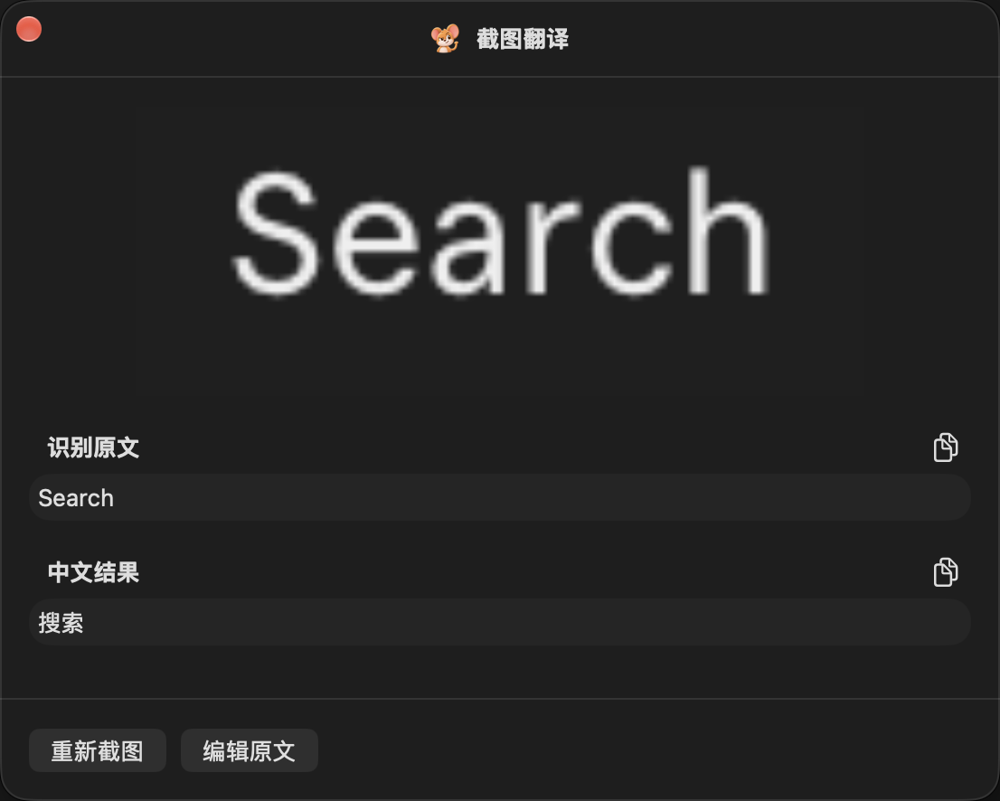
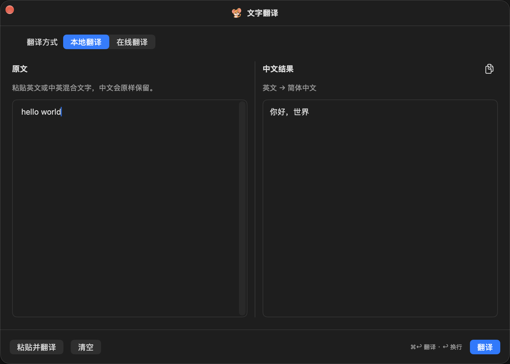

框选，即可翻译
冻结画面后选择区域，识别英文与简繁中文，已有中文原样保留。
⌥⌘J截图翻译

Mac 截图与文字翻译工具 · 正式版 1.0.1
截图识别、文字翻译，一键打开。英文译为简体中文，已有中文原样保留，默认在设备上完成识别与翻译。
冻结画面后选择区域，识别英文与简繁中文，已有中文原样保留。
⌥⌘J截图翻译

粘贴、编辑英文，或将截图识别出的原文带入文字窗口继续处理。
⌥⌘T文字翻译

点击上方“下载安装”，打开下载的 JerryTranslate-…-arm64.zip。
将 JerryTranslate.app 拖入“应用程序”文件夹，双击启动后，从菜单栏图标进入。
首次截图按系统提示授予屏幕录制权限；本地翻译按提示下载英语与简体中文资源。随后按快捷键或点击菜单栏图标开始翻译。
仅支持 Apple Silicon Mac，不支持 Intel。若从 GitHub Releases 下载，请选择 JerryTranslate-…-arm64.zip；“Source code” 是发布仓库快照，不是应用安装包。
目前将英文译为简体中文。截图可识别英文与简体、繁体中文，已有中文原样保留。
在应用的设置中点击“打开屏幕录制设置”，确认已允许 JerryTranslate。如仍未生效，退出应用后重新打开。
在菜单栏图标的菜单中选择“检查更新…”，或在设置中开启每日自动检查。下载与安装都由你确认。
退出应用后，将“应用程序”文件夹中的 JerryTranslate 移到废纸篓。
OCR 与本地翻译在设备上完成，不保存翻译历史。
检查更新只连接 GitHub Pages 与 GitHub Releases，不携带截图、原文或译文。